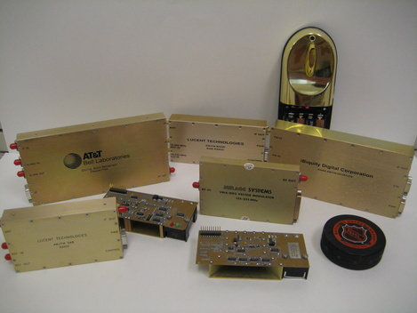

Vervecomm is a Radio Frequency design, consulting, and quick turn prototyping business with over 30 years experience and major corporate clients. Services range from complete turnkey project development to consulting on technical RF design issues.
RF Design and Prototyping Capabilities Include:
- High Performance Broadband Radios - WiMax, WiFi, WCDMA, both CPE and Base Station
- Low cost, low power radio links
- Radar Cores - FMCW, UWB Pulsed, Micropower
- Discrete building blocks - VCO's, Log-conforming VVA's, I/Q mod and de-mod
- Multi-KiloWatt, octave BW, hyper-compact power amplifiers
- Narrow and broadband antenna design
- Turn-key Prototyping
